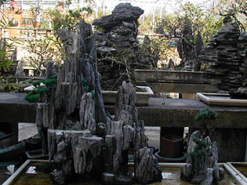
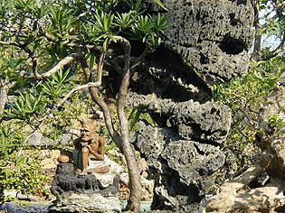
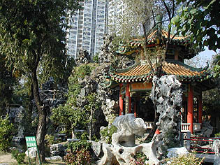
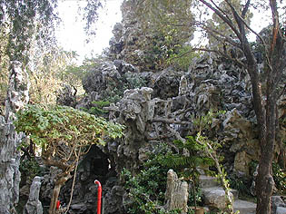
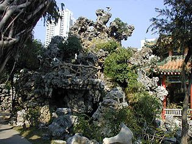
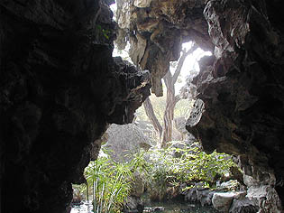
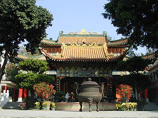
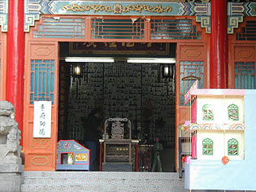
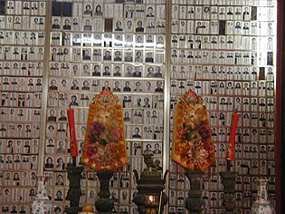

青松観/屯門
屯門の軽便鉄道のとある駅のすぐ近くに青松観という寺がある。

駅から境内に入るといきなり盆栽の大群に出くわす。
大きさは日本の盆栽よりかなり大振りで、盆石とセットになっているモノが多い。
ミニチュア立体枯山水といった雰囲気だ。

木の下に焼き物の人形などもいて中々油断できない。
そんなこんなで私の意志とは全く関係のないところでたっぷりと盆栽見学してしまい、数百のミクロコスモスを堪能したあと、ようやく盆栽エリアをぬける。

今度は中華式庭園なのだが池と東屋を中心に人工の岩山が連なる中華グロッタとなっている。
 
岩山は自然石がコンクリートの矩体に張り付けられたもので、中には洞窟や階段が設けられており富士塚としかいいようのない雰囲気だ。
洞窟の中にはテーブルや椅子があり、滝を裏側から見ながら一休み出来るようになっていてとても楽しい。
見ようによっては等身大の盆栽といえなくもない。

これが本殿（大雄寳殿）である。
軒下の彫刻などはお約束の博多豚骨も真っ青のこってり仕上げ。
 
本堂の左には納骨堂的なお堂があり、ちょうどお葬式をやっていた。内部にはなくなった人の写真がびっしりと。合掌。
で、さらに隣には養老院が。木陰でひなたぼっこをする老人達。
すぐ隣で葬式をやっているが彼等にとっては日常生活。もしかしたら盆栽もこの人達がやってるかもしれない。
あ、そういえば木陰でひなたぼっこは出来ませんでしたね。
ちなみに大雄寳殿の右にはお寺で運営している病院もある。
大雄寳殿の前辺りにいると消毒のスメルがぷう〜んと漂って来た。
何といいましょうか、病気から葬式まで老後はぜ〜んぶお任せ、の寺であった。
じつはこの寺、あの燃えよドラゴンのファーストシーンのロケ地である。
大雄寳殿の前でブルース・リーごっこをやっていたら、無性にブルース熱が高まって来た。
この後、高まったブルース熱にさらに油を注ぐべく油麻地にあるブルース・リーマニアの巣窟、ブルース・リー クラブ
ハウスに向かったことはいうまでもない。
で、もちろんそこでブルース・リーのチェスセットを購入したのもいうまでもない。
次は海へ行きましょう 香港珍寺遊戯に戻る 珍寺大道場に戻る